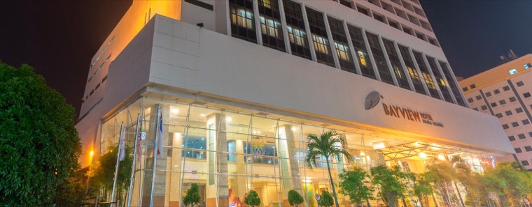
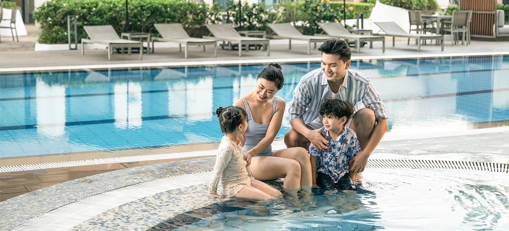

Destination Content
Suria KLCC Parking Rates & Family Tips
My contribution: Content ideation, SEO strategy, and brief development for non-branded travel searches.
View Live Article ↗The Ascott Limited · DiscoverASR · Global Hospitality
daily average AI citations
Snapshot
Only 18% visibility in high-intent generic searches, with page-two rankings for key terms.
Technical SEO, destination content, and AI-search optimization across global markets.
Average position 20.5 → 8.9; daily AI citations nearly doubled to 1,136.
DiscoverASR captured nearly 90% of branded search demand but appeared in only 18% of high-intent generic searches such as "serviced apartments in Singapore". Most non-branded traffic was captured by OTAs and competitors.
Visibility was also limited by page-two rankings for high-value keywords, technical SEO issues including broken structured data, and the growing presence of Google AI Overviews in research-driven searches.
The work focused on four areas:
Identified technical SEO issues and keyword opportunities to improve rankings in positions 11–20. Domain Authority Score grew from 45 to 65.
Created destination guides, persona-led content, and hyper-local insights to capture non-branded travel searches.
Improved content for AI search and created an "AI Unanswered" series, increasing daily average citations by 91.9%, from 592 to 1,136.
Optimized property pages to improve visibility across Google Search and AI-powered search.
A few examples of the work.
My contribution: Content ideation, SEO strategy, and brief development for non-branded travel searches.
View Live Article ↗My contribution: Content ideation and review to fill gaps in AI-generated travel answers.
View Live Article ↗
New Property VisibilityMy contribution: Optimized the landing page for a newly opened property to improve visibility across Google Search and AI search.
Visit Property Page ↗
AI Search ContentMy contribution: content ideation and editing, with a focus on improving the hotel's visibility in AI search.
View Live Article ↗Moved keywords from positions 11–20 to page one, improving average rankings from 20.5 to 8.9.
Focused SEO efforts on high-opportunity markets while rebuilding visibility in mature markets.
Created content addressing detailed travel questions not fully covered by AI-generated summaries.
Improved booking content and user journeys, increasing checkout-to-purchase rates from 62.6% to 69.4%.